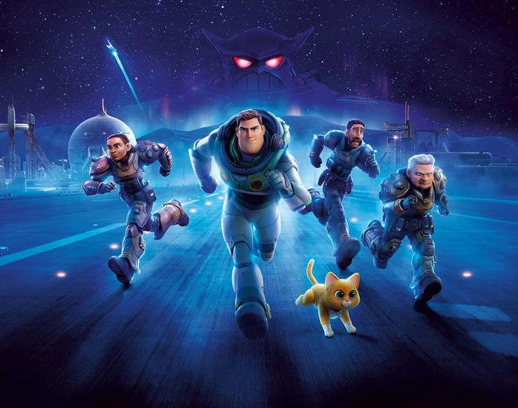
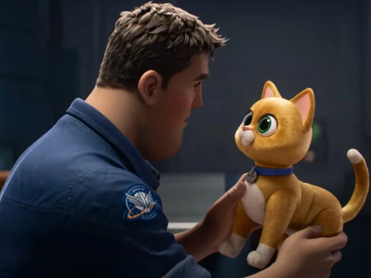
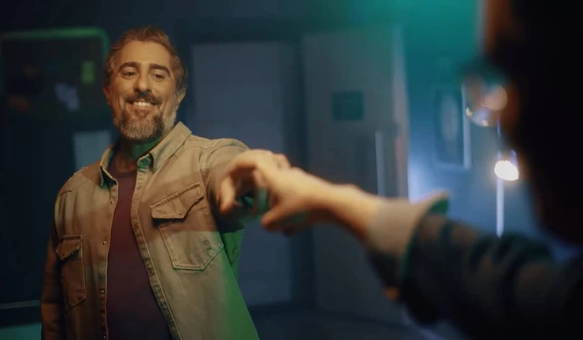
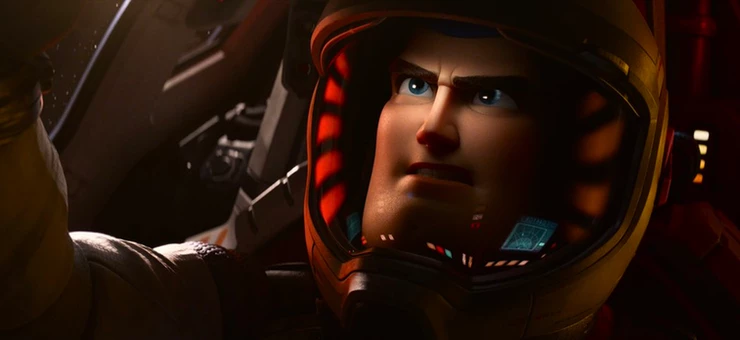

Lightyear é o filme que o Andy assistiu em 1995 e conheceu o Buzz Lightyear, agora será a vez dos fãs da franquia conhecerem a história de origem do patrulheiro espacial.
Depois de um teste de voo da nave espacial que não deu certo, Buzz Lightyear e sua tripulação vão parar em um planeta hostil a 4,2 milhões de anos-luz da Terra. Enquanto Buzz tenta encontrar um caminho de volta para casa através do espaço e do tempo, ele descobre que já se passaram muitos anos desde seu teste de vôo inicial e que os descendentes de seus amigos, são um grupo de recrutas ambiciosos, e seu gato companheiro robô, Sox.
Como se já não bastasse toda a situação, surge Zurg, uma ameaça alienígena com um exército de robôs, para dificultar ainda mais a missão.

Desde que o primeiro trailer foi lançado em 2021, as expectativas em torno da nova animação da Disney Pixar estavam pipocando.
Foram muitas as comparações com as obras do George Lucas e aumentou ainda mais quando o próprio diretor, Angus MacLane confirmou que a saga intergaláctica serviu de inspiração.
Mas sabemos que idealizar, desenvolver e executar, são processos diferentes. E esse tem sido o real vilão das últimas sequências do estúdio, um roteiro sem criatividade.

Lightyear é uma história já batida de astronauta que falha na missão e busca voltar para casa. Você fica sem saber quais criaturas habitam o planeta, como as pessoas passaram viver lá e tem mais um monte de ponta solta. Os personagens secundários não tem o desenvolvimento que merecem,
faz parecer que só foram criados para vender brinquedos, assim como o próprio Andy em Toy Story que pediu muito para seus pais darem um Buzz de presente em seu aniversário. O desfecho do filme é bem previsível, contém piadas prontas e é tudo muito raso.

Guilherme Briggs passou o bastão de dublador para Marcos Mion na versão brasileira. Segundo o próprio Marcos Mion não teve uma única respiração que não tivesse sido checada pela direção.
E ai vai a boa notícia, ele conseguiu honrar a experiência,
nos primeiros minutos sentimos a importância do personagem em sua voz e ao passar dos minutos, é notável que com surgimento das inseguranças do personagem, a atuação vocal do Mion acompanha muito bem.

Como ja é de se esperar, os efeitos visuais, estão impecáveis, tudo muito bonito, todos os reflexos, iluminações e sombras, você quase sente as texturas só de olhar, mas nenhuma surpresa.
Lightyear estreia em 16 de junho de 2022, com sua classificação livre, mas que provavelmente nenhuma criança irá entender os sentimentos de Buzz e a reflexão para os adultos, vai ficar para a próxima sessão de terapia. P.S.: Tem cena pós créditos.